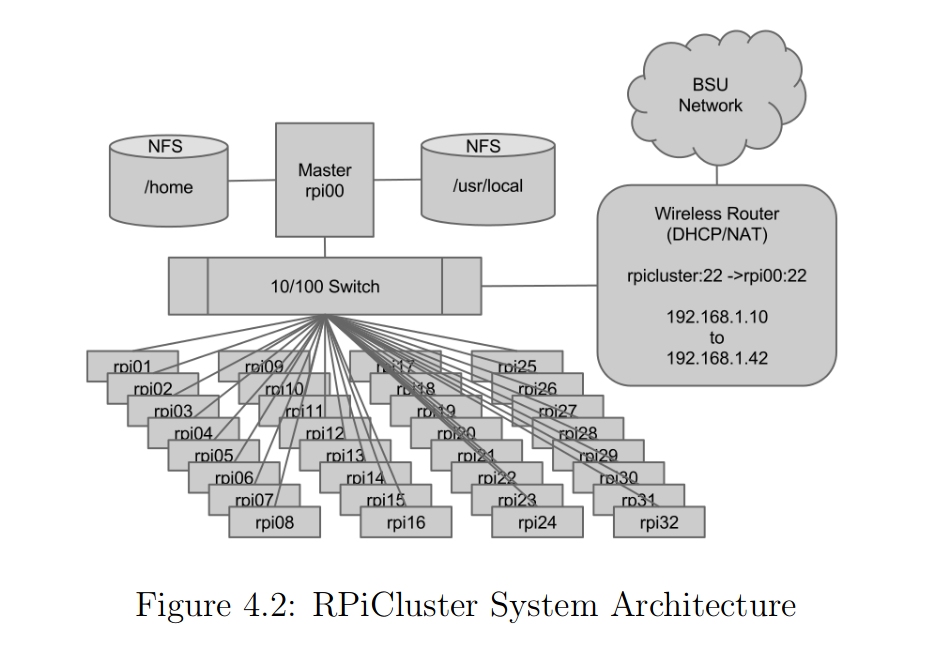
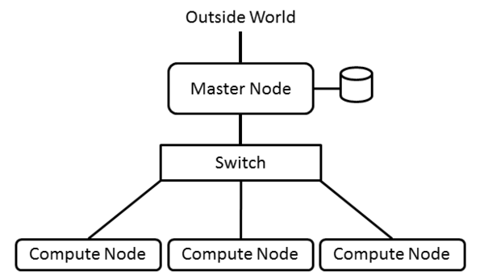
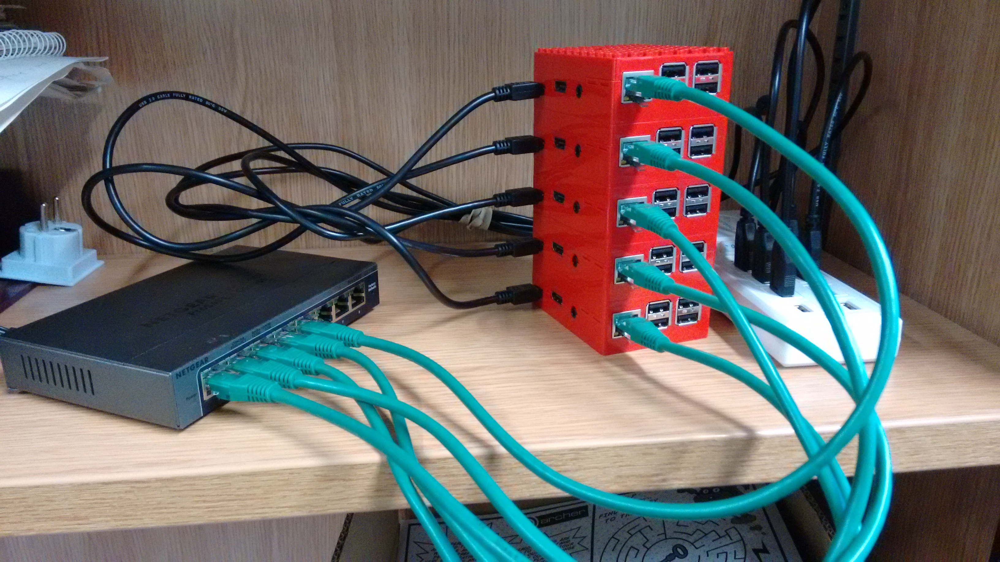

Raspberry Pi
Very interesting Raspberry Pi applications
https://www.youtube.com/watch?v=IbKY-n71XCE
Raspberry Pi is a very small computer.
https://en.wikipedia.org/wiki/Raspberry_Pi
I will try to use it to set up a cluster to study cluster operations.
Using Raspberry Pi to build a cluster:
Paper:
citeseerx.ist.psu.edu/viewdoc/download?doi=10.1.1.431.1284&rep=rep1&type=pdf
The news about the above work:
https://www.tomshardware.com/news/Raspberry-Pi-Supercomputer-Legos-Linux,17596.html
Other application insprison from Zhihu:
有哪些对树莓派的有趣改造和扩展应用？ - Jason Qu的回答 - 知乎
https://www.zhihu.com/question/20697024/answer/15888489
Raspberry Pi Cluster (32 nodes)
coen.boisestate.edu/ece/files/2013/05/Creating.a.Raspberry.Pi-Based.Beowulf.Cluster_v2.pdf
The author’s PhD thesis (using the cluster to fulfill the his PhD work):
https://scholarworks.boisestate.edu/cgi/viewcontent.cgi?article=1855&context=td

Another Raspberry Pi Cluster
https://ieeexplore.ieee.org/abstract/document/6871791/authors#authors
Very good article about how to build an HPC cluster
www.admin-magazine.com/HPC/Articles/Building-an-HPC-Cluster

Building a Raspberry PI Cluster (should be very very useful)
Part I: Hardware Acquisition and Assembly
https://linuxconfig.org/building-a-raspberry-pi-cluster-part-i-hardware-acquisition-and-assembly
Part II: Operating system installation
https://linuxconfig.org/building-a-raspberry-pi-cluster-part-ii-operating-system-installation
Part III: Simultaneous Node Management
https://linuxconfig.org/building-a-raspberry-pi-cluster-part-iii-simultaneous-node-management
Part IV: Monitoring
https://linuxconfig.org/building-a-raspberry-pi-cluster-part-iv-monitoring
Another Raspberry Pi cluster configuration
Very detailed information about SSH Setup but no NFS(Network File System)
Still very very useful
https://www.instructables.com/id/How-to-Make-a-Raspberry-Pi-SuperComputer/
A Complete Guide on How to Set up Raspberry Pi Cluster (include NFS)
https://epcced.github.io/wee_archlet/

This article also provides the link to how to set up cluster in eduroam networking: https://www.epcc.ed.ac.uk/blog/2016/04/29/getting-wee-archie-net.
TopOpt mentioned Raspberry Pi and Petsc (Good!)
https://courses.cs.ut.ee/MTAT.08.037/2015_spring/uploads/Main/Lab6.pdf
Using Raspberry Pi to build a cluster and implement topology optimization
https://courses.cs.ut.ee/MTAT.08.037/2015_spring/uploads/Main/Lab6.pdf
Install Raspbian
https://www.raspberrypi.org/documentation/installation/installing-images/linux.md
Setup VNC
www.carobot.cc/how-to/raspberrypi-tutorials/headless-raspberry-pi-using-ssh-and-vnc/
Using vncviewer
for example:
vncviewer -FullScreen 192.168.0.23:1
SSH
https://www.raspberrypi.org/documentation/remote-access/ssh/